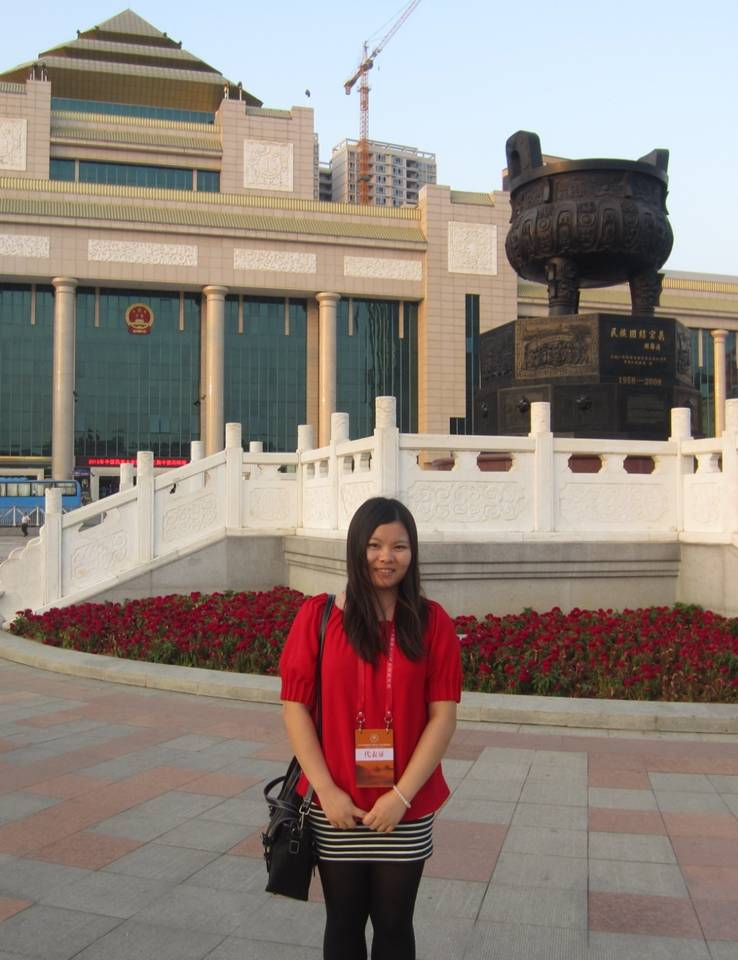
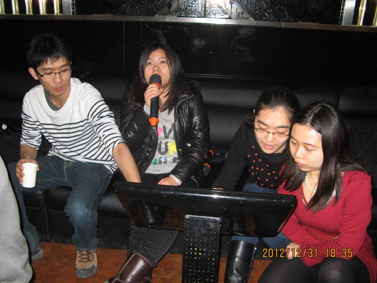
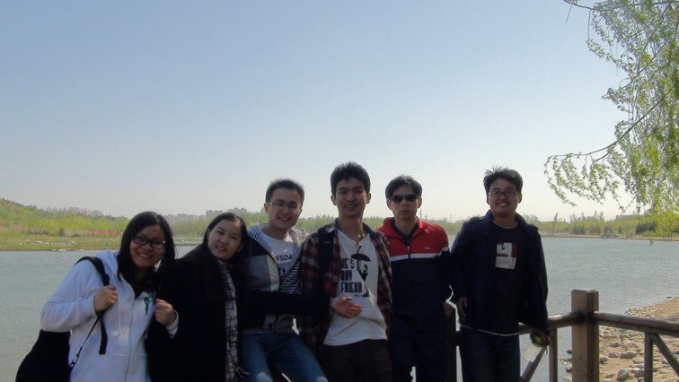
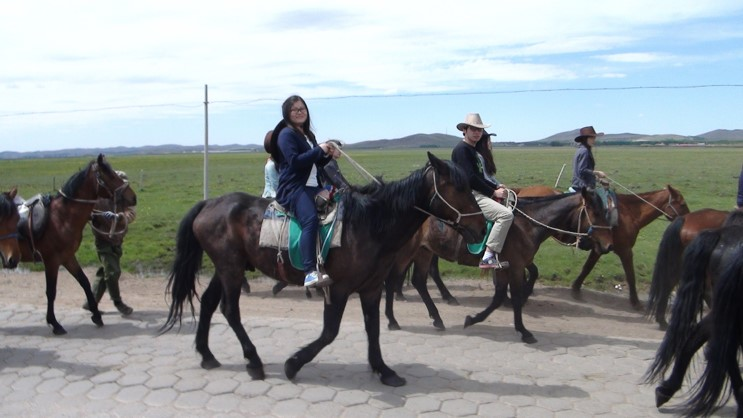
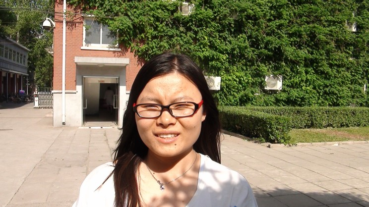

课题组成员
史勇英 硕士（2012-2014）

史勇英 2012级硕士生
Tel: 010-82805646
E-mail: sygne24501@sina.com
毕业去向
赛诺菲（上海）制药有限公司
教育经历
2008.09 – 2012.07 北京大学药学院，本科
2012.09 – 2014.06 北京大学学药学院，天然药物及仿生药物国家重点实验室 老师：周德敏 教授
研究领域
以病毒进入细胞为靶的新型抗病毒药物及作用机制的研究
荣誉奖励
2013年韩国大熊财团奖学金（2013）
2011-2012学年北京大学医学部三等奖学金（2012）
2010-2011学年北京大学医学部二等奖学金（2011）
2009-2010学年卫生部国际交流与合作中心· 日本第一三共医药学奖学金（2010）
2009-2010学年北京大学社会工作单项奖（2010）
代表性论文
- Shi Y#, Si L#, Han X#, Fan Z, Wang S, Tian Z, Li M, Sun J, Jin H, Zhang Y, Zhou D, Xiao S*. Synthesis of novel pentacyclic triterpene-Neu5Ac2en derivatives and investigation of their in vitro anti-influenza entry activity. MedChemComm.; 2017, 8, 1531-1541
- Han X#, Si L#, Shi Y, Fan Z, Wang S, Tian Z, Li M, Sun J, Jiao P, Ran F, Zhang Y, Zhou D, Xiao S*. Synthesis and in vitro anti-influenza virus evaluation of novel sialic acid (C-5 and C-9)-pentacyclic triterpene derivatives. Molecules 2017, 22(7), 1018
- Han X, Shi Y, Si L, Fan Z, Wang H, Xu R, Jiao P, Meng K, Tian Z, Zhou X, Jin H, Wu X, Chen H, Zhang Y, Zhang L, Xiao S*, Zhou D*. Design, synthesis and biological activity evaluation of novel conjugated sialic acid and pentacyclic triterpene derivatives as anti-influenza entry inhibitors. MedChemComm.; 2016, 7, 1932-1945
- Wang H#, Xu R#, Shi Y, Si L, Jiao P, Fan Z, Han X, Wu X, Zhou X, Yu F, Zhang Y, Zhang L, Zhou D*, Xiao S*. Design, synthesis and biological evaluation of novel L-ascorbic acid-conjugated pentacyclic triterpene derivatives as potential influenza virus entry inhibitors. Eur. J. Med. Chem. 2016, 110, 376-388
- Yu M#,*, Si L#, Wang Y, Wu Y, Yu F, Jiao P, Shi Y, Wang H, Xiao S, Fu G, Tian K, Wang Y, Guo Z, Ye X, Zhang L, Zhou D*. Discovery of pentacyclic triterpenoids as potential entry inhibitors of influenza viruses. J. Med. Chem.; 2014, 57(23), 10058-10071
- Xiao S*, Wang Q, Si L, Shi Y, Wang H, Yu F, Zhang Y, Li Y, Zheng Y, Zhang C, Wang C, Zhang L, Zhou D*. Synthesis and anti-HCV entry activity studies of new β-cyclodextrin-pentacyclic triterpene conjugates. ChemMedChem., 2014, 9(5): 1060-1070
- Yu F#, Peng Y#, Wang Q#, Shi Y, Si L, Wang H, Zheng Y, Lee E, Xiao S*, Yu M, Li Y, Zhang C, Tang H, Wang C, Zhang L, Zhou D*. Development of bivalent oleanane-type triterpenes as potent HCV entry inhibitors. Eur. J. Med. Chem., 2014, 77: 258-268.
- Yu F#, Wang Q#, Zhang Z#, Peng Y, Shi Y, Zheng Y, Xiao S*, Wang H, Qiu Y, Huang X, Zhao C, Zhang C, Sun D, Zhang L, Zhou D*. Development of oleanane-type triterpene as a new class of HCV entry inhibitors. J. Med. Chem., 2013, 56(11):4300-4319
申请专利
1. 一种新的三萜-环糊精共价化合物及其制备方法和用途. 周德敏、肖苏龙、司龙龙、俞飞、史勇英、王晗、张礼和（申请号：2013106846796）




